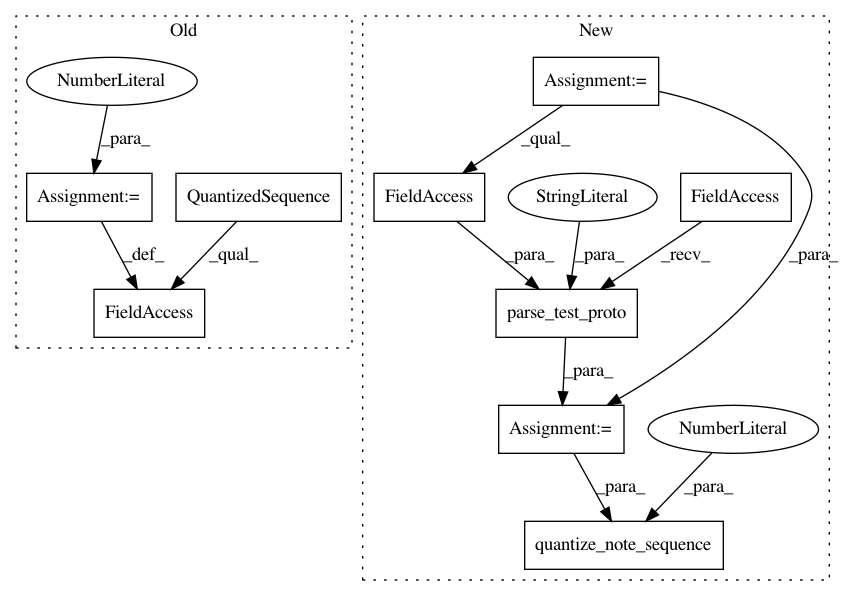

a146d001bf63734851d5a02c2b96d1ef29a61e96,magenta/pipelines/drum_pipelines_test.py,DrumPipelinesTest,testDrumsExtractor,#DrumPipelinesTest#,40
Before Change
self.assertEqual(unit.output_type, type(outputs[0]))
def testDrumsExtractor(self):
quantized_sequence = sequences_lib.QuantizedSequence()
quantized_sequence.steps_per_quarter = 1
testing_lib.add_quantized_track_to_sequence(
quantized_sequence, 0,
[(12, 100, 2, 4), (11, 1, 6, 7), (12, 1, 6, 8)],
is_drum=True)
After Change
self.assertEqual(unit.output_type, type(outputs[0]))
def testDrumsExtractor(self):
note_sequence = common_testing_lib.parse_test_proto(
music_pb2.NoteSequence,
time_signatures: {
numerator: 4
denominator: 4}
tempos: {
qpm: 60})
testing_lib.add_track_to_sequence(
note_sequence, 0,
[(12, 100, 2, 4), (11, 1, 6, 7), (12, 1, 6, 8)],
is_drum=True)
testing_lib.add_track_to_sequence(
note_sequence, 1,
[(12, 127, 2, 4), (14, 50, 6, 8)])
quantized_sequence = sequences_lib.quantize_note_sequence(
note_sequence, steps_per_quarter=1)
expected_events = [
[NO_DRUMS, NO_DRUMS, DRUMS(12), NO_DRUMS, NO_DRUMS, NO_DRUMS,
DRUMS(11, 12)]]
expected_drum_tracks = []
In pattern: SUPERPATTERN
Frequency: 3
Non-data size: 9
Instances
Project Name: tensorflow/magenta
Commit Name: a146d001bf63734851d5a02c2b96d1ef29a61e96
Time: 2016-11-15
Author: curtis@thefjord.org
File Name: magenta/pipelines/drum_pipelines_test.py
Class Name: DrumPipelinesTest
Method Name: testDrumsExtractor
Project Name: tensorflow/magenta
Commit Name: a146d001bf63734851d5a02c2b96d1ef29a61e96
Time: 2016-11-15
Author: curtis@thefjord.org
File Name: magenta/pipelines/melody_pipelines_test.py
Class Name: MelodyPipelinesTest
Method Name: testMelodyExtractor
Project Name: tensorflow/magenta
Commit Name: a146d001bf63734851d5a02c2b96d1ef29a61e96
Time: 2016-11-15
Author: curtis@thefjord.org
File Name: magenta/pipelines/chord_pipelines_test.py
Class Name: ChordPipelinesTest
Method Name: testChordsExtractor